Beyond research
Outside the lab.
Life with Belial, Kyokushin karate, and community service with CSSA@UoM.
01 My little companion

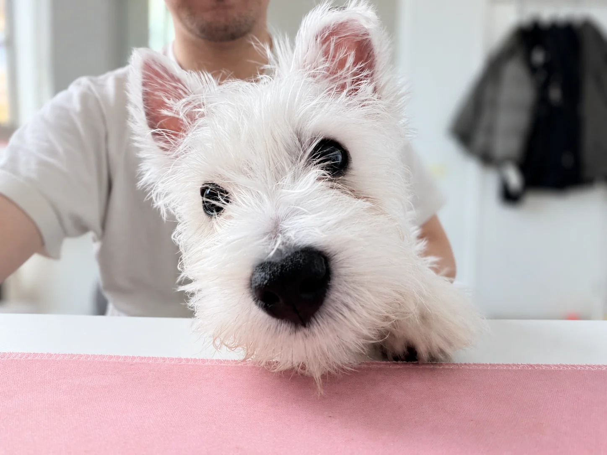
Belial 贝利亚
Meet Belial (贝利亚), my West Highland White Terrier. He is a little boy with bright eyes, soft white fur, and a face that makes it very easy to put work aside for a moment.
- Born
- Breed
- West Highland White Terrier
- A little
- boy
His name is inspired by Ultraman Belial (贝利亚奥特曼).
Informal inquiries about joint dog-walking are warmly welcomed; Belial is open to new collaborators.
Small moments
A few small moments from life with Belial.
9 photographs · click to open
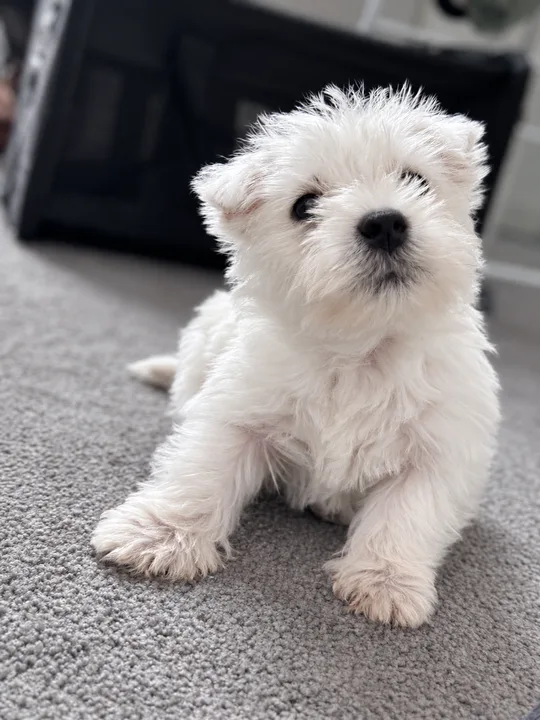

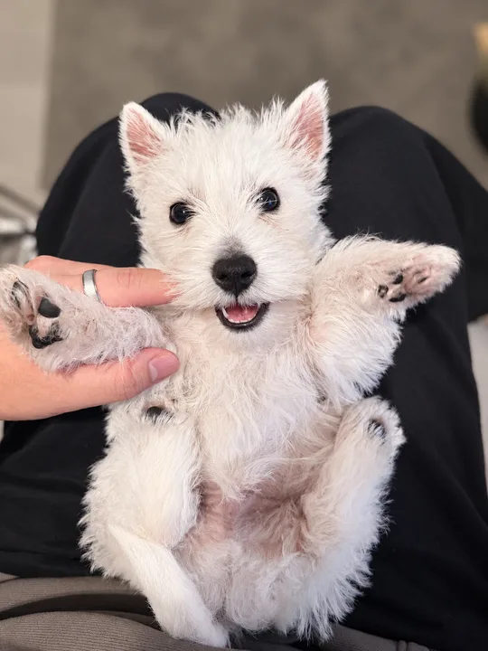

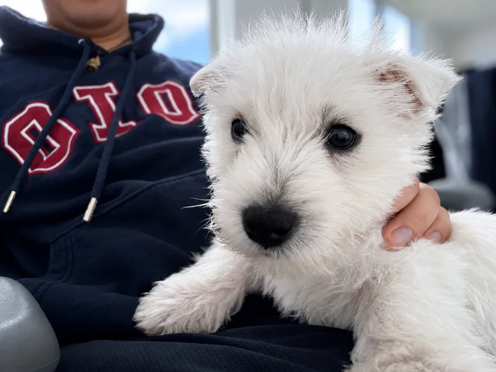

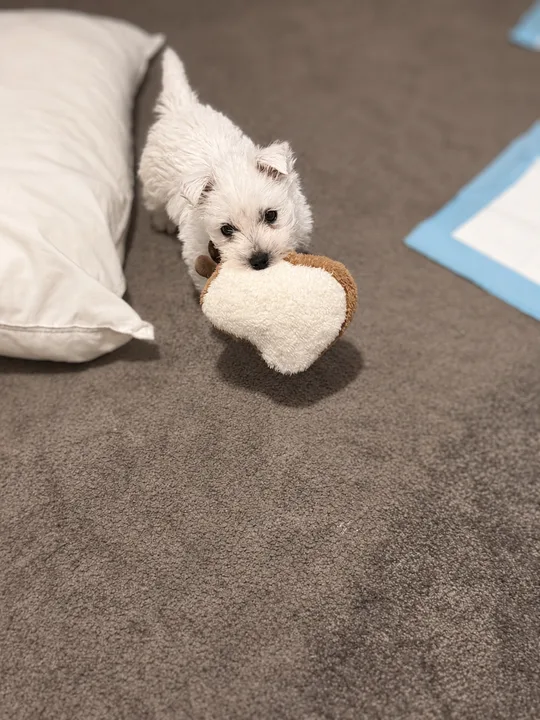

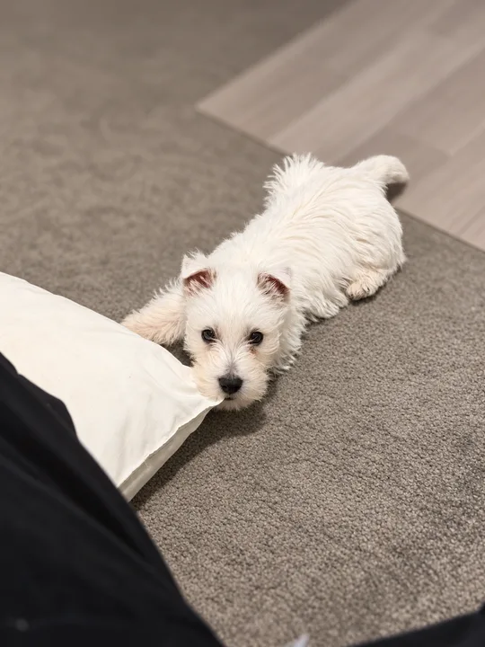

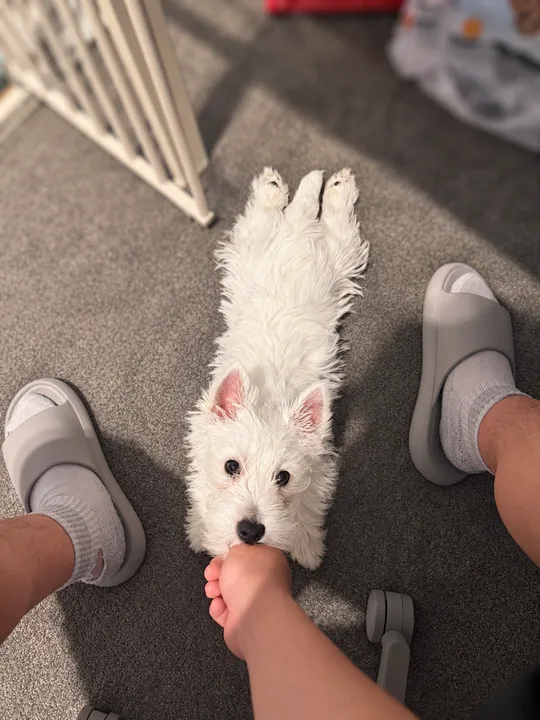

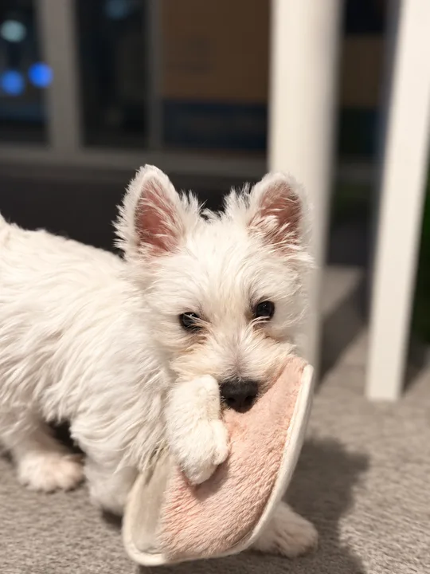

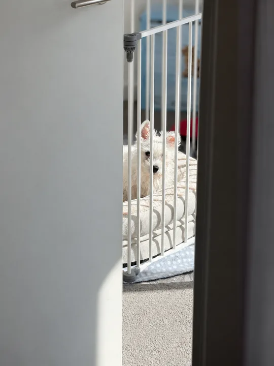
02 A practice for life
Kyokushin Karate
极真空手道
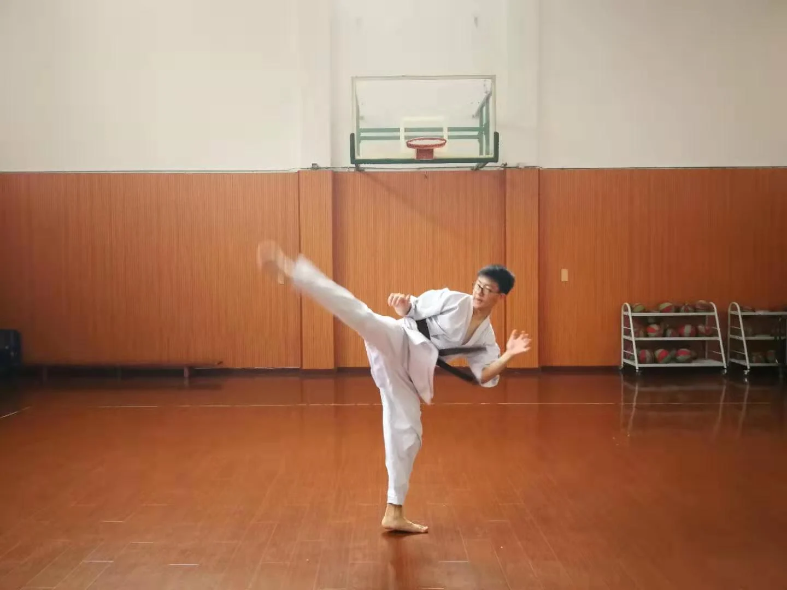
I first stepped into a dojo in 2012, as a Year 4 primary school student, and Kyokushin has been a constant in my life ever since. I have been fortunate to win both of the championships I entered in Shanghai, though it is the years of training between those moments that have shaped me most.
What has stayed with me is the discipline of training itself. Years of demanding practice have taught me to stay with difficult things, to meet a challenge with courage, and to keep working when progress is hard to see. I love the intensity and honesty of the sport: effort is something you return to, session after session, long before it becomes an achievement.
Its lessons reach well beyond the dojo. Learning to use force has made me more conscious of restraint, personal boundaries, and the dignity of others. I see strength as carrying an obligation to act with care: to respect the people around me, to take responsibility for my actions, and to offer help where I can. That balance of resolve and consideration is what I hope to carry into everyday life.
2012年，还在读小学四年级的我，第一次走进极真空手道的道场。从那时起，这项运动便始终伴随着我的成长。我有幸在上海参加的两次锦标赛中均获得冠军。然而，如今回望，比起夺冠的瞬间，真正塑造我的，是那些日复一日、默默坚持的训练岁月。荣誉或许属于某个时刻，而时间所沉淀的品格，才是更为长久的收获。
多年习武让我逐渐明白，坚持并非始终满怀热情，而是在面对困难、看不到进步时，依然愿意付出努力；勇气也并非无所畏惧，而是在挑战面前选择迎难而上。我热爱极真空手道的纯粹与真实。在这里，成长没有捷径，每一分进步都需要时间与汗水的积累。比起最终的胜负，我更珍视一次次走进道场、全力以赴的过程。正是这些平凡而漫长的坚持，让坚韧与自律逐渐成为了我的一部分。
而道场给予我的，远不止身体与意志的磨炼。越是理解力量，越懂得克制的意义；越是经历对抗，越明白尊重与分寸的重要。我逐渐认识到，真正的强大，不仅在于有能力面对挑战，更在于懂得如何运用自己的力量。它意味着尊重他人的尊严与边界，为自己的言行承担责任，也意味着在力所能及之时，愿意向他人伸出援手。我相信，坚定与温和并不矛盾，力量与善意也应当并存。这份对力量与责任的理解，是极真空手道留给我最珍贵的领悟，也是我希望在道场之外，始终践行的人生态度。
OSU!
03 Community & service
CSSA@UoM
Chinese Students and Scholars Association, University of Melbourne
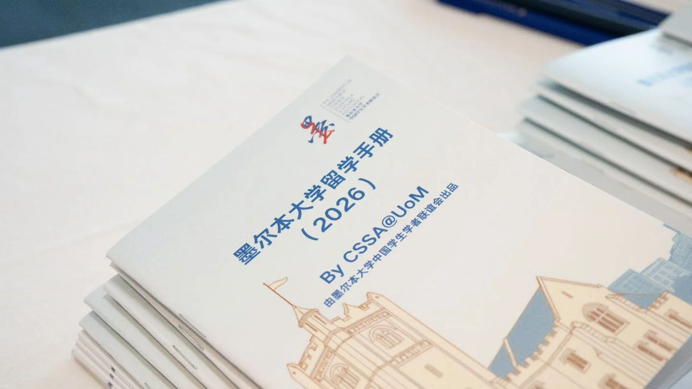
I joined CSSA, Melbourne’s largest Chinese student society, in early 2023. It became a place to put my technical background to work and help other students find their footing in Melbourne.
- Early 2023
Joined IT & Development
- Sep 2024 — Sep 2025
Head of IT & Development
- Sep 2025 — Jun 2026
Vice President
Technology in service of students
As Head of IT & Development, I oversaw the development and maintenance of the society’s website and WeChat Mini Program, coordinated technical support, and proposed and led CSSAGPT.
A more confident beginning
As Vice President, I led the 2026 Semester 1 pre-departure programme in China, working with Bank of China’s Sydney and Melbourne branches and the Chinese Consulate-General in Melbourne. Two months of preparation led to two weekends of briefings in Beijing, Shanghai and Guangzhou, supporting over 100 incoming-student families.
This was CSSA’s first in-person programme of this scale in China in several years, made possible by the dedication of our collaborators, speakers and volunteers.
- families supported
- 100+
- cities in China
- 3
- weekends of events
- 2
Sharing knowledge across the AI and IT community
Since 2025, I have led a departmental sharing series each semester, connecting current members with alumni and industry practitioners. Recent AI discussions bring together technical, business and product perspectives to help students understand the field, develop relevant skills and make informed career choices.
Why this matters to me
I remember the loneliness and uncertainty of arriving in Melbourne for high school. Helping others find their footing is now one of the most rewarding ways I can give back. Conversations with students and parents at the briefings reminded me how much practical advice can mean: reassurance, trust and a more confident beginning.
I have since stepped back from CSSA to better balance my studies and personal life. I remain committed to community service and hope to keep contributing in ways I can sustain.